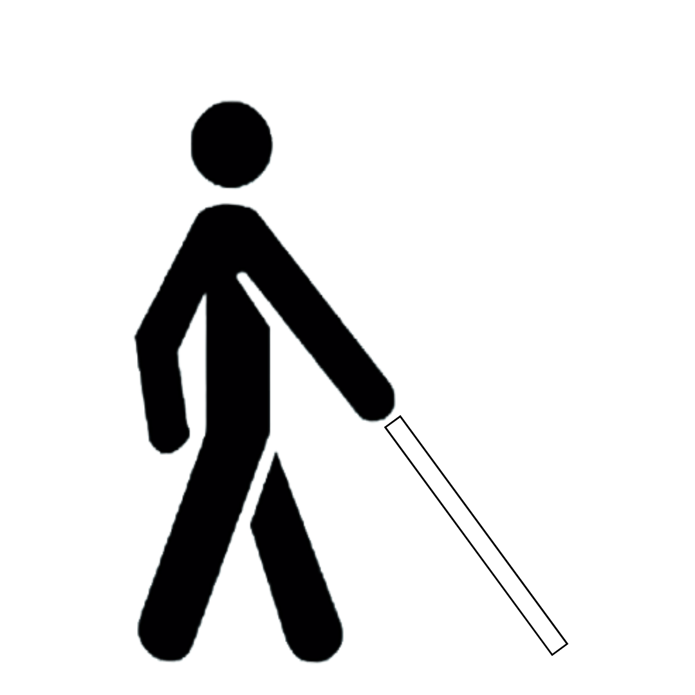
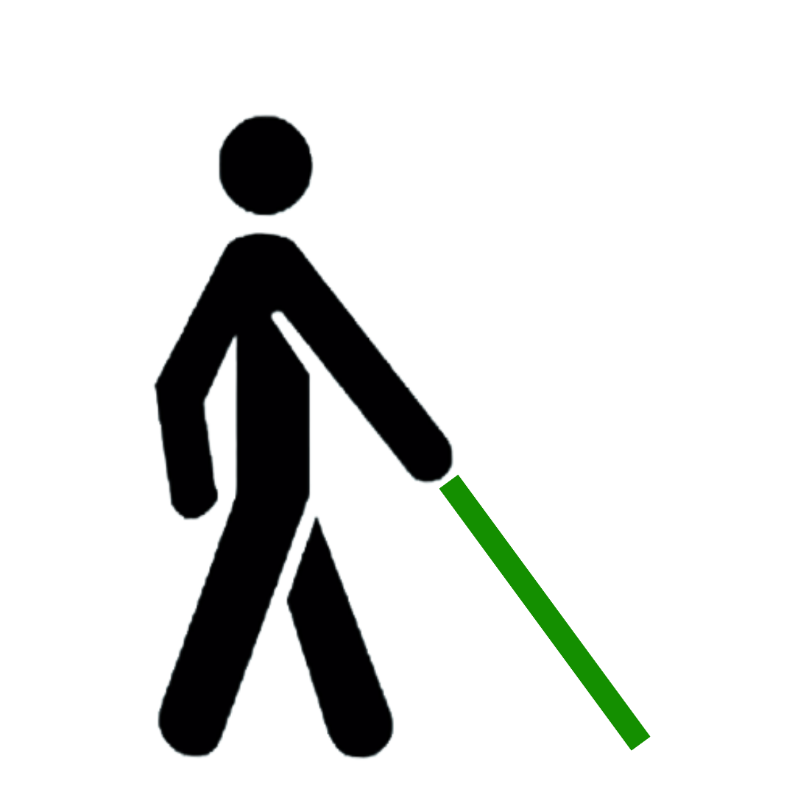

Nuestro producto es un bastón de asistencia que utiliza sensores para detectar obstáculos en el entorno, proporcionando alertas por vibración al usuario para evitar colisiones y mejorar la movilidad y seguridad.
Tipos de Bastones existentes

Bastón Blanco
Bastón usado para identificar personas con discapacidad visual
Bastón Blanco Rojo
Bastón utilizado para personas Sordociegas.

Bastón Verde
Bastón utilizado para identificar personas con baja visibilidad.